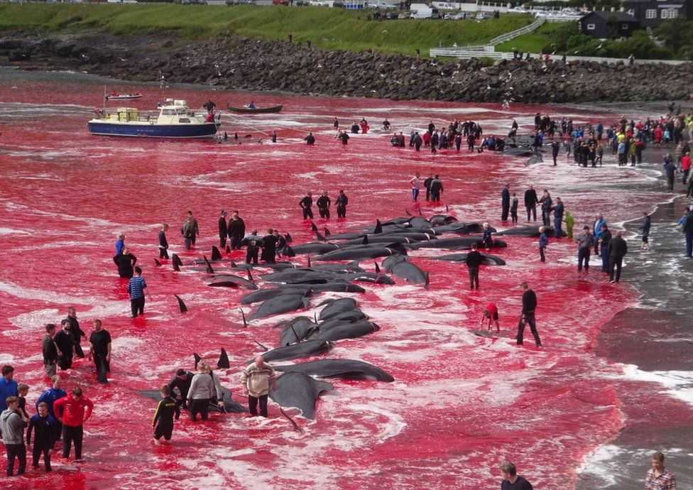
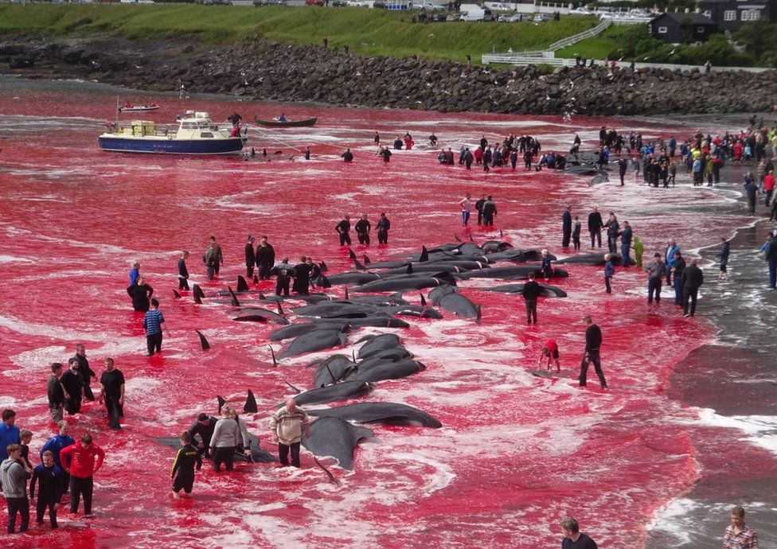
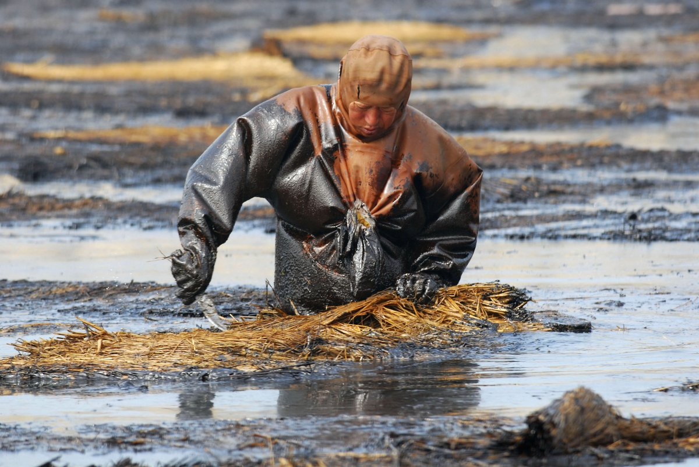
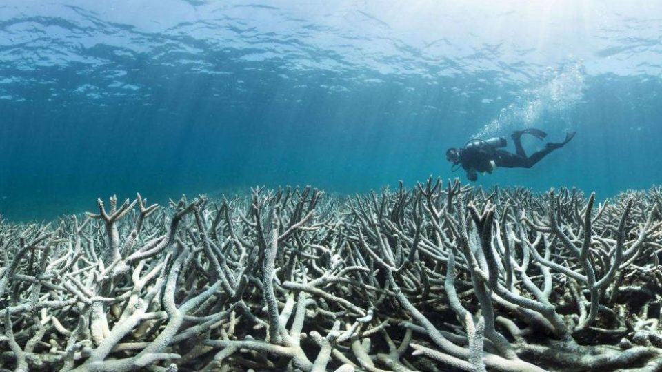
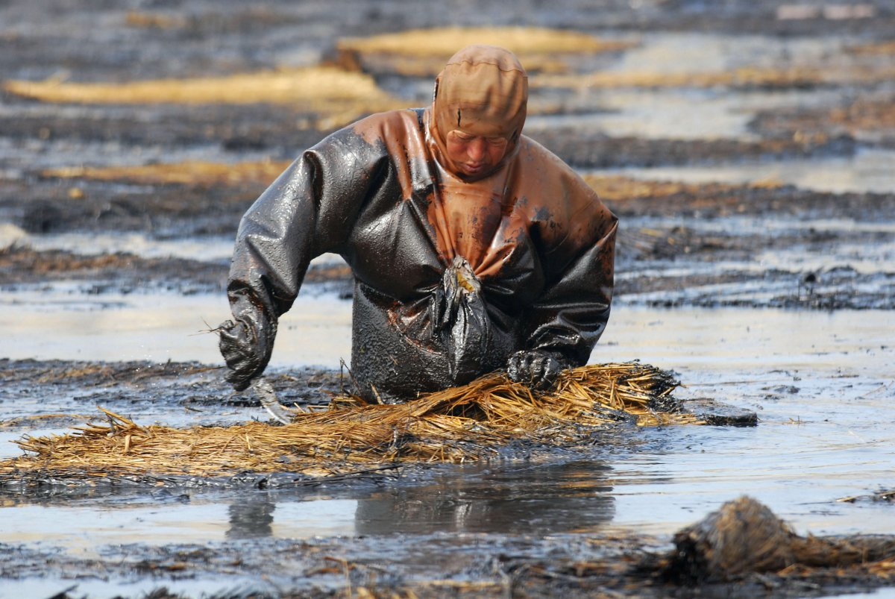
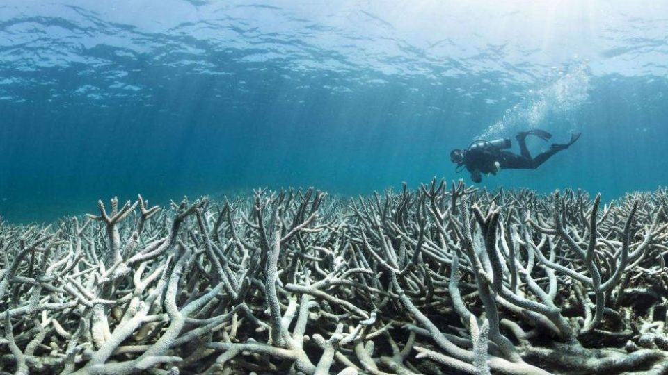

the challenge
Our oceans are being degraded by human activities that harm marine life, undermine coastal communities and negatively affect human health.

 


 




popular stories

importance of healthy oceans
Healthy oceans are the life support system for our planet, providing 97 percent of the Earth’s livable habitat and a home to more than 700,000 species. The oceans are vital to human health as well, providing jobs, enjoyment and food to billions of people. Half of the oxygen we breathe is generated by our oceans.

marine reserves now
Marine protected areas — especially fully protected reserves — are vital to restoring the health of our oceans. They help preserve biodiversity and put endangered species on the road to recovery. Despite this, less than 2 percent of our oceans are strongly protected.

ensuring sustainable seafood
As consumers, our choices matter—especially for the health of our oceans.
Overfishing and destructive fishing practices have caused the populations of the ocean’s top predators—like sharks, tuna, and swordfish—to drop by as much as 90 percent over the past 50 years.